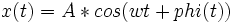

De: La Frikipedia, la enciclopedia extremadamente seria.
De: La Frikipedia, la enciclopedia extremadamente seria. De: La Frikipedia, la enciclopedia extremadamente seria.
Dícese de un antiguo baile ancestral, caracterizado por el uso de atuendos góticos y movimientos muy violentos. Aunque numerosas fuentes citan a los vikingos como precursores de este arte, hoy en día se sabe que surgió en Ganímedes, y que llegó al planeta el año 23.656 DF (después de Fraga).
Aunque Batuka fue bien aceptado en sus orígenes, no fue hasta la era post-delfín que gozó de su mejor momento, el Batukásico. La práctica habitual del ritual Batuka por parte de la humanidad propició el desarrollo de un cerebro mayor y la creación de dos extremidades inferiores separadas. Actualmente estas características son las principales diferencias entre humanos y delfines (George W. Bush es una excepción, pues pertenece a la evolución del pez saltarín del fango).
La aparición de problemas de compatibilidad de archivos de sistema Batuka (*.bat) con la nueva versión de Homo Sapiens XP, junto con el pantallazo azul de Bill Gates, abrieron una nueva etapa de caos que llevó a Batuka a un estado de letargo. Se sabe que durante muchos siglos los profundos conocimientos procedentes de Ganímedes fueron guardados en secreto por Leticia Sabater (no confundir con la futura Princesa Leia).
En 1997, cuando Leticia tomó conciencia de sí misma, divulgó sus ideas revolucionarias a lo largo y ancho de la República monárquica anarcosocialista-fascistaindependista de carácter liberalconservador progresista centralista federal, Operación Triunfo, Intel se encargo de actualizar sus microprocesadores para el soporte de archivos multimedia con extensión .bat.
Actualmente la disputa comercial del mercado audiovisual está encabezado por Batuka y el Reggaeton (del que podríamos hablar como la mayor aberración de las mujeres desde la guerra civil), que moviliza a un 89% de los Canis mundiales.
Batuka podría ser un intento de dominar el mundo si se cumplen las profecías de la Duquesa de Alba.
A día de hoy es un baile tremendamente conocido. He aquí una pequeña recopilación de las especies que practican Batuka:
Batuka se rige principalmente por las ecuaciones del movimiento autónomo uniformemente alicatado, aunque teorías modernas no descartan una pequeña curvatura del espacio-tiempo. Científicos de la NASA han podido crear en el laboratorio un bujero negro a partir de pequeñas partículas desprendidas en un violento paso techno-merengue, aunque su ciclo de vida es pequeño.
El movimiento del culo, siempre en contrafase con los hombros, viene dado por

siendo A la amplitud de un carril de la M-30, w la constante de propagación en el vacío de un átomo de circonio y phi(t) un factor pseudo-aleatorio introducido después de la Guerra Fría para optimizar los errores de cálculo.
El factor de inteligencia del sujeto es inversamente proporcional a las horas dedicadas. Si embargo la falta de sueño puede provocar relaciones exponenciales o incluso neonazis.
Autor(es):